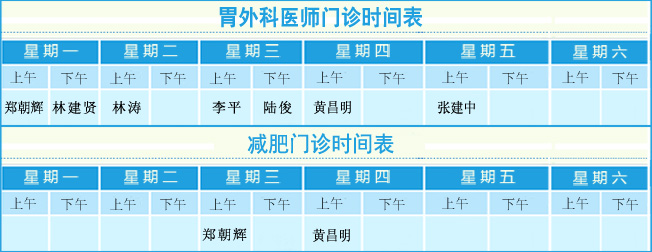

学科带头人风采
黄昌明
黄昌明 教授 主任医师 硕士生导师 现任福建医科大学附属协和医院胃外科主任，中国抗癌协会胃癌专业委员会常委、 中国医师学会微创外科委员会委员、中华医学会肠外肠内营养学分会肿瘤营养学组委员...
更多。。。
科室介绍
更多
福建医科大学附属协和医院胃外科（其前身为肿瘤科），是我国综合性医院中第一个治疗“胃肿瘤”的专业病区，是“胃肿瘤”专业临床、 科研和教学的主要基地。科室技术力量雄厚,学术梯队健全，设有1个病区，共47张床位，实收住院病人70人以上。 拥有高级职称者6名，其中教授3名、硕士研究生导师3名；中级职称者3名，博士、硕士学位者占医师总数的75%以上。 科主任黄昌明教授现任中国抗癌协会胃癌专业委员会常委...
查看详情
新闻动态
更多
- 2017年9月10日，教师节快乐!（黄家军教师节...2017.12.26
- 胃外科成功举办“第九届胃癌外科规范化治疗...2017.12.26
- 2017年8月25日，《完全腹腔镜胃癌根治术专家...2017.12.26
- 2017年9月10日，黄昌明教授团队受邀赴中南大...2017.12.26
- 2017年9月09日，黄昌明教授团队受邀赴大理大...2017.12.26
视频
更多
门诊时间表
